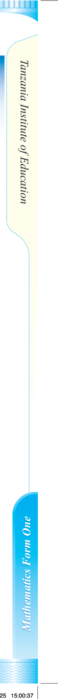

Chapter Two
Numbers
Introduction
Numbers play a vital role in everyday life. Different activities are performed with the help of numbers. Numbers are used to quantify and measure quantities. For instance, length, mass, time, volume, and population are some of the quantities represented by numbers. In this chapter, you will learn about rational, irrational, and real numbers. You will also learn about repeating decimals, inequalities and absolute values of real numbers. The competencies developed will enable you to perform daily life activities such as counting things, managing money, distributing items, and interpreting numbers based on contexts, and many other applications.
Concept of numbers
Numbers are classified into different categories. Some categories of numbers that you have already learned include whole numbers, natural numbers, fractions, integers, and decimals. Other major categories of numbers include rational, irrational, and real numbers. Activity 2.1 enables you to identify categories of numbers from daily life activities.
Rational numbers
A rational number is any number that can be written in the form of where and are integers, and . The condition is essential because division by zero is not defined. The set of rational numbers is denoted by the symbol ℚ.
